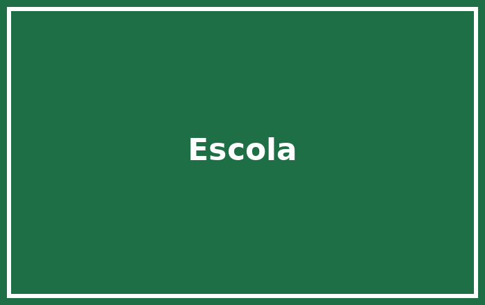

Sou estudante do Instituto Industrial e Comercial de Nampula, em Nampula, Moçambique. Frequento o curso de Técnico de Suporte Informático e tenho interesse pela área de redes, sistemas operativos e electricidade.
O curso de Técnico de Suporte Informático prepara o formando para instalar, configurar e dar manutenção a computadores, redes e sistemas, além de criar páginas Web com HTML e CSS. O instituto lecciona também o curso de Contabilidade e Gestão.
